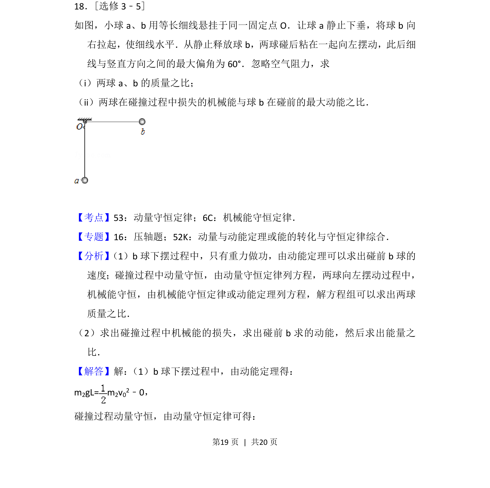
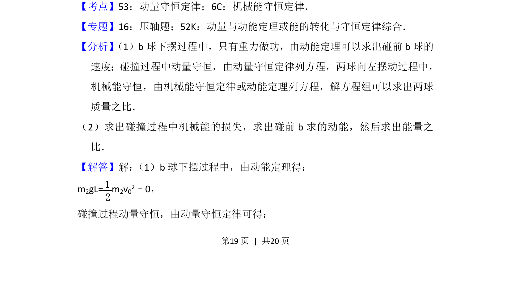
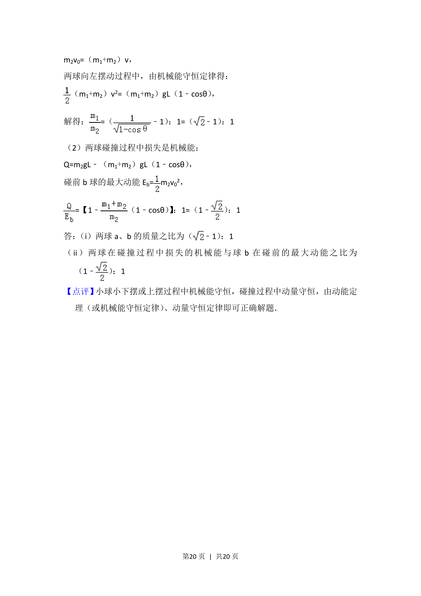

考点：动量守恒定律 机械能守恒定律 动能定理

两球碰撞后粘合摆动，通过动能定理和动量守恒求质量比及机械能损失比。


📄 原 PDF 第 19 页：
素材/真题/吉林/2008-2024·（吉林）物理高考真题/2012年高考物理试卷（新课标）（解析卷）.pdf
18．[选修3﹣5] 如图，小球a、b用等长细线悬挂于同一固定点O．让球a静止下垂，将球b向 右拉起，使细线水平．从静止释放球b，两球碰后粘在一起向左摆动，此后细 线与竖直方向之间的最大偏角为60°．忽略空气阻力，求 （i）两球a、b的质量之比； （ii）两球在碰撞过程中损失的机械能与球b在碰前的最大动能之比．
【考点】53：动量守恒定律；6C：机械能守恒定律．菁优网版权所有 【专题】16：压轴题；52K：动量与动能定理或能的转化与守恒定律综合． 【分析】 （1）b球下摆过程中，只有重力做功，由动能定理可以求出碰前b球的 速度；碰撞过程中动量守恒，由动量守恒定律列方程，两球向左摆动过程中， 机械能守恒，由机械能守恒定律或动能定理列方程，解方程组可以求出两球 质量之比． （2）求出碰撞过程中机械能的损失，求出碰前b求的动能，然后求出能量之 比． 【解答】解： （1）b球下摆过程中，由动能定理得： m2gL= m 2v02﹣0， 碰撞过程动量守恒，由动量守恒定律可得：